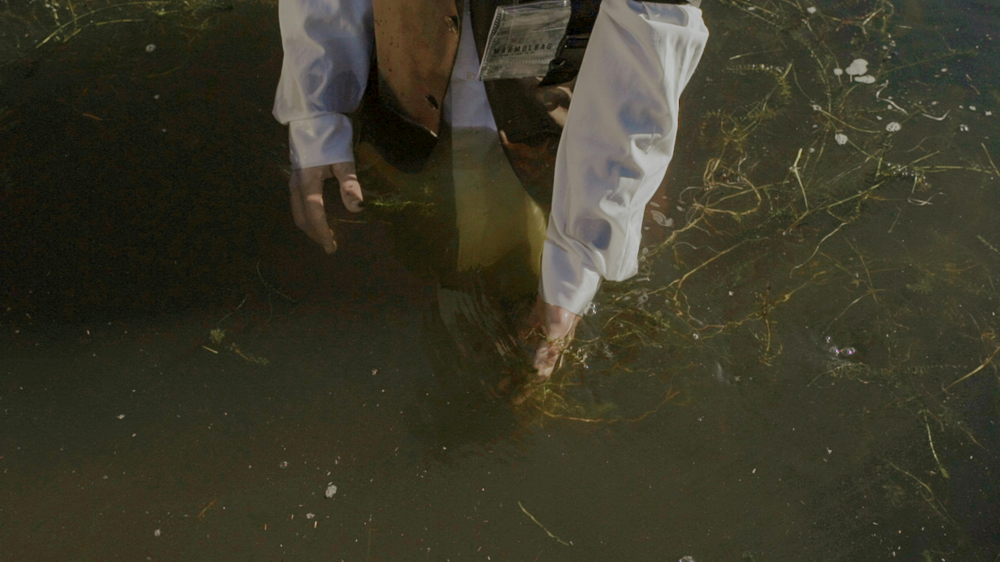

Patricia Bishop
Environmental Planning · Ecology Research · Fieldwork
I’m an environmental planning and policy graduate, ecology researcher, and artist based in Portland, Maine. My work is rooted in curiosity about wetlands, rivers, coastal habitats, and the species that move through them.
Wetlands · Fisheries Ecology · Habitat Restoration · Conservation Planning